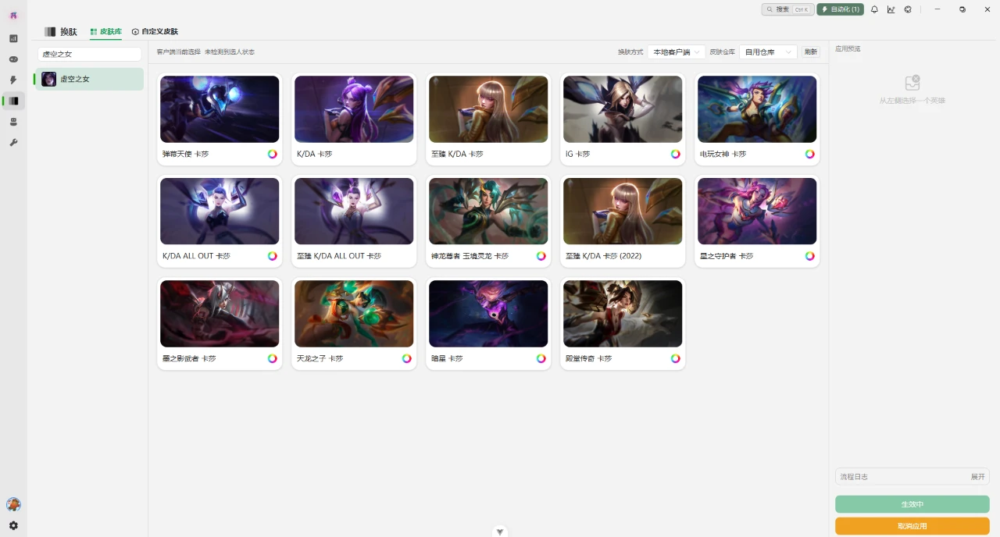
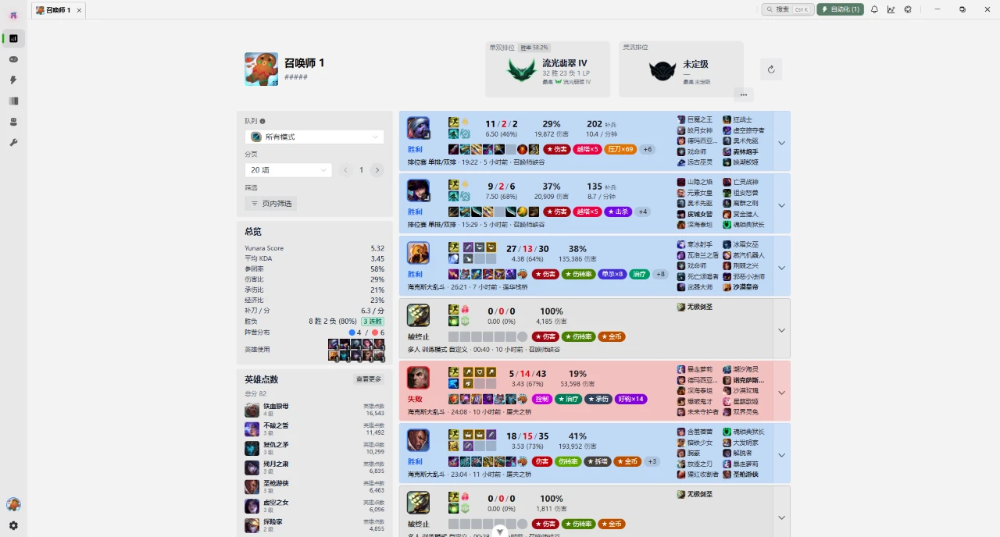
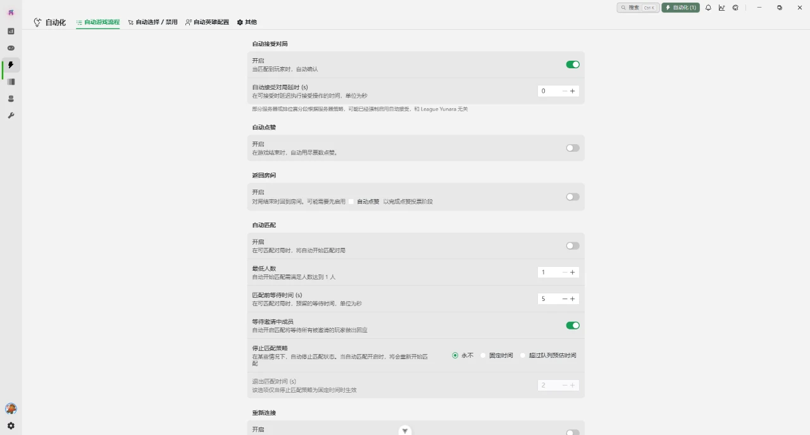

换肤
在线皮肤库按需下载，不装完整皮肤包；也可以挂自己的本地皮肤。选英雄、挑皮肤、点应用，一步到位。
两条通道：本地客户端与 DLL 注入，自定义皮肤只走前者。
它能做什么
从进游戏前的查战绩，到选人阶段的秒选秒禁，再到结束后的点赞与领取。
在线皮肤库按需下载，不装完整皮肤包；也可以挂自己的本地皮肤。选英雄、挑皮肤、点应用，一步到位。
两条通道：本地客户端与 DLL 注入，自定义皮肤只走前者。
查任意召唤师的近期对局、胜率、常用英雄与分路，标记你常遇到的人，胜负手一眼看出来。
腾讯区服跨大区可查，英雄数据窗可在选人阶段直接打开。
选人阶段按预设自动秒选、秒禁，自动接受对局、结束自动点赞。规则配一次，之后每次对局都跟着走。
英雄配置可分路保存，误触前会显示当前生效的规则。
斗魂竞技场专用：识别对手卡片，给出评级徽章，用独立悬浮窗显示，不占你的操作区。
需要游戏以无边框或窗口化运行才能取到画面。
游戏内发送、房间工具、百宝箱、法球与奖励领取、战利品与好友清理，还有客户端窗口尺寸一类的修补。
按用途分页放着，用到再点，不常驻后台弹窗。
八套内置主题加自定义强调色，深浅色跟随系统。战绩、英雄数据、复活倒计时都是独立窗口，能单独开合。
不喜欢的窗口直接关掉，不会留一个托盘图标占着屏幕。
数据来自英雄联盟客户端自带的 LCU 接口与官方数据源，不改技能数值、不修改内存里的战斗数据。 皮肤资源由本地引擎处理，安装包不打包完整皮肤库。
界面长这样
左边导航六个入口，右侧内容区随选中的英雄、玩家和对局状态变化。
左侧选英雄，右侧挑皮肤。缓存状态、下载体积、当前生效的皮肤都在同一屏里，不用回到网页端翻。

一名玩家的近期对局、胜率、常用英雄与分路分布，配上你自己的标记。查人这件事不需要开浏览器。

自动接受对局、自动秒选秒禁、结束自动点赞，每一项都能单独开关并设置延时。规则一次配好，之后不用管。

授权与价格
官网直购扫码付款，到账后自动核验发放激活码，不需要提交付款截图。 下面的价格是服务端实时下发的，调价后这里同步变。
￥2/ 1 天
装好之后先验证自己的机器能不能跑通，再决定要不要长期用。
正在读取库存… 购买 1 天￥10/ 7 天
一周一张码，多数人的节奏。到期前续费即可，不需要重新配置。
正在读取库存… 购买 7 天￥20/ 30 天
一个月一张码，适合每天都开的玩家。到期前续费即可，配置与皮肤缓存都还在。
正在读取库存… 购买 30 天价格与库存由服务端实时下发；付款页 2 分钟内未支付会释放订单，请按页面显示的精确金额付款。
常见问题
没找到想问的，直接到交流群里问，把现象和日志一起发出来会快很多。
换肤会往游戏目录放一个注入模块，并在取消应用时把它删掉；生效和失效都需要重启游戏。 它不改你的账号数据，也不改技能数值。皮肤资源本身放在软件自己的数据目录里。
我们不承诺一定安全。软件走客户端自带的 LCU 接口与本地渲染，不做内存修改那类事， 但第三方工具始终有被反作弊标记的可能。请把它当作风险自负的使用，账号问题我们无法代为申诉。
授权是服务端验证的：租约 6 小时，离线宽限 24 小时，软件会在后台静默续期。 所以正常使用感觉不到它存在，但长时间断网后需要重新连一次网。
不需要。皮肤库在线按需下载，只取你真正应用的那几个。 想用自己的皮肤包也可以，走「自定义皮肤」页签，仅本地客户端通道支持。
先在自助解绑释放旧设备，再在新机器上用同一张码激活。 每张码每天只能自助解绑一次；如果旧机器已经打不开软件了，加群走人工。
可以用。换肤需要向游戏目录写入文件，遇到权限不足时以管理员身份运行软件即可。 带还原保护的机器重启后皮肤会回到原始状态，重新点一次「应用皮肤」就行。
国服为主要使用场景，战绩查询支持腾讯区跨大区；外服按皮肤编号统一处理。 海斗助手需要游戏以无边框或窗口化运行。